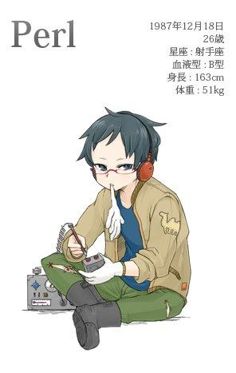
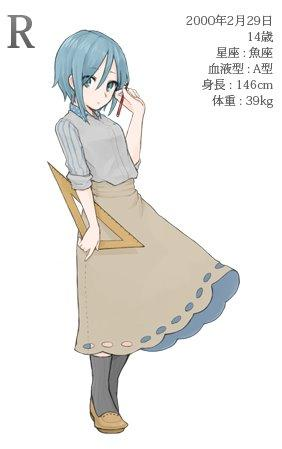

试想一下，当Java、C++、Python、Ruby、PHP、C#、JS等编程语言变成了动漫人物会是怎样的一幅场景呢？下面就一起看看在日本作家渡辺将人的笔下，各种编程语言都是哪类"美女"的吧！
Java
犹如宫泽贤治的《不畏风雨》中出现的、性格木讷的女孩子。从小就由于迟钝和大食量等特征被别人当作笨蛋，从小学入学开始进入田径部、坚持跑步，在中长跑中经常取得好成绩，给人以活泼的印象。是十分努力的女孩子。
她的家境并不算好。父亲Sun是有才能的艺术家，但不擅长理财，在她14岁的时候因为苦于借债积劳成疾而去世。她被Oracle叔叔收养，那时还与Google叔叔之间因为对她的扶养权问题而引起争端并闹上法庭。
在周围的人都担心，正值青春期时她在这样的处境下会不会一蹶不振的时候，她却处变不惊、继续着每天练习跑步的生活。
朴素的、认真的、难说是聪明的她，进入高中后不知是不是稍稍开始对异情在意，被人看到她偷偷地学着别的女孩子的时尚穿着在街上行走。虽然会受到"虽然很努力，也许稍微有点过时"、"那衣服与Java的印象不合"之类的否定评价，但感到"意外地很萌？"的好意的人也很多。
喜欢喝咖啡，只喝印度尼西亚产的。其本人曾说过"喜欢咖啡胜过三顿饭"，不禁让人稍稍担心"这样对健康没问题吗？"

C++
苗条的双腿和协调的五官。被许多人称作"IT界首屈一指的美女"的她，也因为拥有插花、茶道、钢琴和小提琴、柔道、剑道、合气道等等才能而出名。
她的粉丝大多很狂热，还存在着"黑暗军团"这样的粉丝俱乐部。黑暗军团的是规模仅次于共济会（Freemason）的巨型团体，一般人无法入会。据说如果能回答出对她非常狂热的问题，就会有察觉到的军团成员来询问"你愿意进入黑暗军团吗？"
与她同父异母的姐妹Objective-C一心专注于弹钢琴，她的专注被IT界的天才史蒂夫乔布斯（也被一部分人称为紫色蔷薇）相中，而一跃成为明星，而C++则是由于其美貌和才能被人关注，长年坐稳业界明星的宝座。姐妹二人真可谓是对比鲜明。
她根据心情不同频繁地变换发型和服装这一点也很出名。昨天还是和服配黑发，今天却是红发哥特系登场之类的，因为她的变身而使轻度的粉丝惊奇道"啊嘞？今天是C++小姐吗？"的事也常有发生。远离业界时私下经常穿HYSTERIC GLAMOUR的服装。
关于她的出身年月日其事务所并不公开。虽然也有出身于1983年一说，本文采用的是在一部分粉丝中流传甚广的1985年10月14日说。其间也流传有"她自己也许也记不清自己的生日……"这样煞有介事的传言。与其说"C++小姐的话记不清自己的生日也不是什么不可思议的事情"，倒不如看作是她天真烂漫的性格的表现。

Python
由Guido父上养大的深闺中的大小姐。她出身于荷兰的阿姆斯特丹，但在小时候就搬到了美国，父亲也在家里使用英语，所以不怎么会说荷兰语。
她个性随和。最出名的是她听C++宣布"想出去旅行一趟改变一下形象。200x年回来哦"出门旅行后（结果回来的时候已经2011年了……），放言说"我也稍稍出门旅行一下，公元3000年再回来哦"后出门数年未归。
虽然有着这样冒失的行动，但多亏抱着"养成大家都喜爱的孩子"的心愿的Guido父上大人的教育，实际上和她接触后会觉得她非常容易亲近。
前些天，她来到作者的朋友的公司打工（她现在似乎在边上大学边打工），被人们评价为"能充分融入工作、八面玲珑、给我们帮了大忙"。她不怎么说多余的话，彬彬有礼的样子，被评价为是在"天真烂漫、自由第一"的人众多的业界中与众不同的存在。
据说她擅长的科目是数学，经常看到她轻松地解决各种统计相关的难题。喜欢穿白色的连衣裙或浅粉色的开衫这样清新的服装。
实际上她还喜欢爬行动物，据说在家里还有养蛇。粉丝们经常讨论"她会给宠物们起什么样的名字呢？"这样的话题。大多得出的都是"肯定是Monty吧"这样的结论。会不会飞就不得而知了。（估计指的是英国的六人喜剧团体Monty Python的作品The Flying Circus，译者注）

Ruby
由松本爸爸养大的日本的女孩子。因为生日在圣诞节，人生最大的烦恼是生日礼物和圣诞节礼物变成一份了。出生地是岛根县松江市，除了旅游和工作以外没有到过其它的县。
由于受的教育是自由奔放式的，她性格好动、好奇心旺盛。平时是一个率真的好孩子，但偶尔也会看到她喜欢恶作剧的一面，这让周围的人十分困扰。看到她的身影时经常会想起IT业的"Just For Fun !"这句话。
小时候过着一个人在荒山野岭到处跑的生活，10岁的时候与一个叫Rails的女孩成为朋友，生活开始变化。两个人玩耍时停在了演艺事务所门前，谈起可以两个人结对进行演艺活动。以"Ruby与Rails"的艺名出道、主要从事杂志模特，也有拍过电视广告，所以很多人都听过她们名字。
人们想着她在这多愁善感的年龄段体验各种演艺活动、性格多少会产生一些变化吧，但在前些天与她久违的谈话中，却惊讶地发现她仍是与从事演艺活动之前一样行动自由奔放。虽然行为举止多多少少显得更加稳重，其喜欢恶作剧、活泼的本性却和以前一样没有变化。
想着已经是高中生了差不多也要开始穿一些成熟一点的服装的她，对于洋装却和小时候一样穿着Mickey Mouse。虽然她个子小又是娃娃脸与这样的衣服很配，不过这样真像一个女高中生吗？
她的粉丝也分为想要她一直保持现在的样子，和想要看到她更成熟的样子的两派。

PHP
以强化Web世界为目的制作出来的女性机器人。竖着的头发是用作天线来随时接收主人的命令的。
为了有与人类相近的触感，使用了硅树脂来制作其皮肤。内部是类似于刀片服务器的构造，常常使用多台服务器进行复用。因此体重比人类更重一些。
在她最初登场的时候，还能看到她关节可动部分的骨架，行动也很僵硬，与人类的形象差别很大。然而经过了18年间6次的大版本升级之后，其行为和言语已经渐渐变得像人了。最近更是达到了像初音未来这样（比起人类仍然有少许违和感但已经十分自然了）的级别。
虽然笨笨的、工作时也磕磕绊绊的，但由于她遵循机器人三原则、服从主人的命令，也有很多人成为她的粉丝。她的粉丝俱乐部官网"PHPer！"无需入会费便可简单入会，是会员数在IT界首屈一指的大团体。
对于她持拒绝态度的人也很多，常有"她的行为在生理上有些难以接受"、"如果再聪明点就好了"、"与她稍有过接触但觉得还是与人类差别很大"这样的评论。
平常穿从Forever12和志村买来的衣服。想着穿便宜的快速时尚（fast fashion）衣服便可以将省下的钱花在机器开销上。可以说是标准的机器人的效率优先的花钱方式。或许会有她也在意流行、为样子烦恼的那一天吧？

C#
在著名的微软公司接受精英教育、11岁时便跳级进入大学学习、倍受人们关注的少女。也被称为"IT界的最强幼女"。
因为与C++的名字很像，一段时间内盛传"难道是私生子吗？"的流言，实际上两人没有直接的血缘关系。也有报道称两人是远房亲戚，但实际情况如何则不得而知。
似乎喜欢成熟的行为、讨厌像小孩子一样玩耍。有生日的时候收到父母送的名为安迪的毛绒玩具时说道"这是啥。没sense。不要"的传闻。
然而对于食物的兴趣却仍停留在小孩的阶段，多次目击到她在学校食堂点儿童套餐的样子。不喜欢喝咖啡，就算是甜味的罐装咖啡也会令她皱眉头。
虽然偶尔会见到她意外地孩子气的一面，多数情况下见到的还是她说话、待人接物彬彬有礼的样子。是一个既有成熟的一面又有稚气的一面的孩子。由于还在成长期，见到她时常有"又长高了啊"、"有些像大人的样子了"这样的感慨。一直会期待着下见到她时会长成什么样子。
常穿秀兰邓波的洋装。据说都是她本人挑选的，与她自己非常相配。她的可爱让人们无论男女都会成为她的粉丝。
她的志向是在大学毕业后不仅在养育她生长的微软公司的旗下工作、还要活跃于整个IT界。虽然没有问到更详细的计划，但据说是要做出能让苹果和企鹅等也能和睦相处的东西。到底会做出怎样的东西来呢？

JavaScript
在争议地区长大的17岁的女孩子。常常面无表情、谈话时总给人以一定的距离感。
虽然与Java的名字很像，两个人之间却没有血缘关系。在当时Java这样的名字很流行，所以父母也给她起了类似的名字。她本人似乎对自己的名字并不在意，有时也以"ECMA"的笔名进行活动。偶尔也会被叫"JS"的外号，对此则更不在意，甚至对这种称法公然无视。
她的生涯非常不幸。刚一出生祖国便爆发战争。懂事之前便母亲去世、离开了父亲。在大人们任性的争斗中，她学会了将自己藏在壳中、保护自己周围的生存之术。同年龄的女孩子随着年龄的变化都在挑战各种风格的时候，她却不顾周围的话语、一个人继续闭锁在壳中。当时就是非得这样才能生存的艰难环境。
由于有了这样的儿童时期，她的说话、思考、待人接物的方式与其它的孩子都稍显不同。有很多人在与她说话时都会烦恼该怎样说才好。不过，也有人对她持有简单的一根筋的思考方式"容易接触"、"某种程度上来说，很好理解"的印象。
现在，她的国家正向努力解决纷争、开拓新的居住土地的方向前进着。大人们虽然仍旧任性地互相斗争，至少在这几年里，已经没有发生像以前那样互相憎恨、互相残杀的战争了。
在开始复兴的祖国里，她如今应该能幸福地生活着吧？什么时候才能看到她像同龄的女孩一样欢笑呢？

Perl
Perl于1987年12月、美国的沃尔夫妇家中诞生。其父亲拉里精通计算机、语言学，母亲也从事中世纪文艺复兴和语言学专业，Perl就是在这样接受了高等教育的父母身边长大的。
父亲的教育虽然严厉，却也给了Perl许多自由。父亲在教育过程中经常说的一句话是："方法不止有一个。"（There's more than one way to do it)
想到实现什么时，达成的方法不只有一种。可以考虑各种方法。父亲的这种教育方式，对她的性格形成产生了很大的影响。
"这样做的话会怎么样？"……"那样做又会如何？"……张开好奇心的翅膀长大的她渐渐发现了自己"发明"方面的天赋。绝代的发明家、Perl诞生了。
从她踏上发明家的道路的20年来，其发明多达128890件（2014年1月统计数），她的发明，从没什么用处的玩具，到能解决世界上许多问题的有益的发明，应有尽有。她发明的物品的原型，全都捐赠给了CPAN博物馆，任何人都可以阅览。
如今仍然不论实用与否、不断做出想做的新发明的她自打趣地在采访中说道："我比起发明家，更像是各种破烂的生产装置。"她露出牙齿的笑容，非常振奋人心。
Perl对洋装不怎么讲究，平时因为调整机械时觉得麻烦，会穿便于运动的休闲装。最近常穿的羽绒服据说是在ame横（东京上野的一条商业街）的WEGO买的。喜欢的食物是草莓。她说作业中对集中注意力而疲劳的大脑来说最适合的食物就是草莓。

C语言
支撑着这个世界的女神大人，也被称为"圣母大人"。
关于C的出身年月没有定论。有人说她在创世纪（指1970年1月1日左右）之前就存在于这个世界，也有人说她是在稍后的1972年左右诞生的。
她是女神大人，因此像"1970年左右出身的话，她现在的年龄是……"这样的想法是不信教的行为。绝对不要有这样的想法。
她的名字是字母表的第三个字母"C"。据新约史书上的记载，在她之前还有叫作B的女神大人。一些资料显示"肯和丹尼斯创造了B，但对此并不满足。此后丹尼斯和其它人又合力创造了C"。
世界上有许许多多她的信徒。然而在一段时间内都没有正确传达她的教诲的圣经。当初丹尼斯和布莱恩留下的诗篇虽然担负着这样的使命，人们却希望有更加明确的言语。此后有许多有识之士将各种逸闻编辑整理、编著出了正确传达她的教义的圣经。
本书至今已被修订过多次，根据修订年的不同，被称作C89、C99、C11等。
一般人与C不能直接对话。只有积累了足够的修行者才会被允许与C交流。
修行是十分严格的，需要理解"指针的指针"之类的问题，以及要求100%地成功解决无论多么努力地修行都难以克服的"malloc/free"问题。由于这样的背景，真正能跟她进行日常交流的人非常地少。
然而由能够交流的人经手、世界上诞生了多种多样的知识与技术。即使你没有见过她的样子，她的慈爱也确实地每天都围绕在你身边。

Visual Basic
姓氏是Basic，名字是Visual，也有很多人叫她的绰号：VB。小名是Ruby（与那个Ruby没有关系）。从小被某个资产家（不能说他的名字）看上，一家人都寄身于资产家的身边。那时她的名字换了好多次，如今才定下这个名字，有着比较复杂的家庭环境。
关于资产家要收养尚处于幼年的她原因，据不可靠的传言称，他从她身上看到了从前就很憧憬的Basic女士的影子。收养与具有与憧憬的女性相似气质的小孩，也即实行所谓的光源氏计划。
也许年轻人并不了解，Basic女士曾是《微电脑Basic杂志》的封面模特，在当时是每个人都非常向往的麦当娜一样的女性。实际上我的认识的人里面年轻时为她倾倒的人非常之多。
VB在接受严格教育的同时，也在关于兴趣方面拓展天性，她在手工制品、装饰品方面有着独特的才能。看着她制作珠子的装饰品的样子会觉得犹如魔法一般。仅仅是动动手，一瞬间就可以做出一串项链。
在她10岁的时候，资产家的家里来了一位新的养女。（人们常说的那位）
由于这个原因，她现在正在家中努力做一位好姐姐。然而本来便懦弱、不擅长说话的她却时常反过来被小她10岁、认真的、发言时间长的妹妹说教。加油啊，VB小姐。
小时候的VB会穿着父母买的Emily Temple的衣服，现在更多时候穿着是自己买的Lowrys Farm的衣服。今年就要大学毕业进入社会了，目标是VB小姐特有的成熟路线。

R
她于2000年2月29日出身。正是残存在人们记忆中400年一遇的被诅咒的那一天。虽然出身于非常不吉利的日子，她自己却成长为人见人爱的聪明的孩子。
她的母亲名叫S。虽然在神话的世界里C是在B之后出生的，她的名字却是S的前一位R。这几个都是很难用Google搜出来的名字。（注：因为太短了！）
她的母亲非常擅长数学，是统计学者的助手，R也继续了这一性质。她从小时候起就很擅长数学，小学时代就已经达到能快速解决高中数学问题的级别。此外，她对几何图形也很感兴趣，经常有人看到她画着各种二维、三维图形、画好后一个人露出满足愉悦的表情。是一个稍微有点奇怪的孩子。
R在擅长数学的同时却也对语言表达方面稍显逊色。前些日子采访她的时候，她对提出的问题想要回答却找不着合适的词，取而代之"刷——"地画了一幅散点图说"这样的感觉"。或许在她的眼里，这个世界里用语言来表达就像折叠复杂的数学公式那样复杂吧。
她对服装不怎么讲究，常常穿着不紧不松的连衣裙和衬衫。
对于父母给她买的洋装是多少价格、哪儿买的这样的问题没有认识。仅仅是，对于最近买来的喇叭裙的裙摆张开的角度很在意。
她的梦想是将来成为一名统计学者，尽管只有14岁却经常混迹于大学学生中间每天都在解各种问题。最近光是大学已经不能满足、又向父母请求、在各种各样的研究所里进出。

Scala
O教和F教之前有着长着的宗教战争。Scala是这两个宗教的牧师和修女结婚诞生的异端。她出身后立即引起了两家之间激烈的对立，察觉到危险的父母将她送到私立JVM学校的Odersky老师那儿作为养女寄养。
现在两个宗教比起当时已有了关系改善的征兆，有一部分人也将她视为两家融合的象征。然而抱有强烈的对立心态的人仍然很多，也常常有针对她的存在引起的争论。F教的人们认为她的存在没有充分认识F的本质，而O教的人则对混有F的她感到难以理解。
虽然诞生于这样复杂的环境，她自己对于周围的环境却不关心，而是十分平静地到双方的教会中取面包、坚强地生活着。被她这种天真烂漫的姿态所感动、成为她的粉丝的人也很多。
Scala似乎喜欢同校的高年级部里上学的Java小姐，休息时间经常去找她。Java小姐也并不讨厌她，经常会像大姐姐一样让她坐在她的膝盖上温柔地抚摸她的头。虽然在Scala把Java喜欢的Duke的人偶用红绳子绑起来进行恶作剧时把Java惹得十分生气，在此以外则几乎没怎么吵过架。两个人就好像亲生姐妹一样。
有着见多识广的父亲和温柔的姐姐的Scala现在也许是，与其出身的复杂情况相反、实际上非常幸福地生活着吧。
她对于洋装喜欢明快的颜色和花纹，经穿着Algonquin的衣服。虽然是比较有个性的时装，由与生俱来的有个性的她穿来却不可思议地自然。

Shell
创世纪（1970年1月1日）起经过数年后被目击到的妖精。会寄宿在家中，有着类似于棕精灵（Brownie）的生活方式，向她们拜托家务事或着杂活的时候，会回答两次并接受的温顺的孩子的。
她们不常出现在人间存在的地方，因为不通言语，会用信件交流。如果拜托的事情说得比较含糊的话，有可能会造成误解而发生不得了的事情。对此的技巧是明确地像"做那个|做这个>放在这里"这样有顺序地将要拜托她们做的事写好。如果对拜托的事理解得很好的话，她们会在夜里将事情都处理好。如果很好地完成了工作的话，请别忘了在第二天的晚上放上作为谢礼的方糖。
Shell中有各种各样的种族。现在已确认的种族中比较有名的有："ba"、"c"、"k"、"tc"、"z"等等。其服装根据种族不同而不同，我所目击到的是一只身高60cm左右、穿着巴宝莉的儿童服装的个体。恐怕人们目击到最多的是"ba"种。个人而言我也想遇到身高更高一些、尖耳朵的"z"种，现在虽然知道如何写信，却从未见过实物。
尽量她们会在同一个屋子里居住，却很少有人有机会见到，也不如何才能遇到他们。
有一种说法是，每天都把写程序这一仪式进行到午夜、勉强靠咖啡因支撑着抬起头的状态下突然向屏幕看去，能够看到她的身影。确实我遭遇她，也是在公司里熬夜写程序的时候。
Shell的个体非常地多，据说每家每户都会有一只。在大家的家里，实际上有着许多的她们居住着、等着来信也说不定。

ActionScript
在争议地区诞生的13岁女孩子。
她的父亲是有名的设计师，但是她5岁的时候被卷入战火身亡。幸运的是她那时年纪还小、将她收养的Adobe叔叔非常用心地将她养大，没有在她心中留下很大的伤痕。叔叔和她父亲同样都是设计师。也许在她的记忆中已经把两个人混淆一起了也说不定。
她所居住的国家与JavaScript所居住的国家是邻国，两国同样是ECMA人种构成的。在外国人看来JavaScript和ActionScript的外貌非常相似。确实在看她们儿童时期的照片，在肤色和五官上都很相像，但如今长大了的照片看了的话会如何呢。
她把"为祖国和叔叔努力"作为座右铭努力着，然而努力却经常得不到回报，是一个运气不太好的孩子。
在争论地区盛传将实行新的公用语的时候，她希望为即将到来的和平时代出一份力，比谁都更早开始学习这门语言，然而在好不容易能说好这门语言的时候，这语言被采用为公用语的提案泡汤了。
在她刚开始学习移动端上的设计时，她想着在移动方面强大了会对叔叔的工作有用。也可以减少祖国的外贷。在这样的想法中努力的时候，叔叔经营的公司却被某个巨型移动终端公司强行终止的交易，关于移动端的工作也急剧减少。
十分努力却常常得不到回报的她，伫立于这片如今也看到到纷争停止的土地上，继续地前进着。

有朝一日努力会得到回报的吧。祝福她在10年后仍能平安，不断地前进着、生活着。
来源：http://www.oschina.net/news/53201/programming-language-as-a-girl